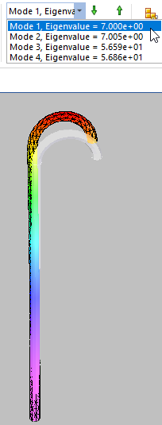

Linear buckling analysis
When to use linear buckling analysis
Use linear buckling analysis to determine the load at which a structure becomes unstable. For example, when a model contains slender parts or an assembly contains slender components that are loaded in the axial direction, they can buckle under relatively small axial loads. For such structures, the buckling load becomes a critical design factor.
Buckling analysis is usually not required for bulky structures, as failure occurs earlier due to high stresses.
-
To apply linear buckling analysis, choose the Linear Buckling study type on the Create Study dialog box.
-
For an example of how to define a buckling study, try the Tutorial: Linear buckling analysis.
Linear buckling concepts
In linear static analysis, a structure is assumed to be in a state of stable equilibrium. As the applied load is removed, the structure is assumed to return to its original, undeformed position. Under certain combinations of loadings, however, the structure continues to deform without an increase in the magnitude of loading. In this case the structure has become unstable; it has buckled. For linear elastic buckling analysis, two key assumptions are that there is no yielding of the structure and that the direction of applied forces does not change.
Linear elastic buckling incorporates the effect of the differential stiffness, which includes strain displacement relationships that are functions of the geometry, element type, and applied loads.
Buckling analysis using the default settings solves for four modal eigenvalues, and the mode shapes that are associated with the buckled form. The eigenvalue is multiplied by the applied load to give the critical buckling load.
When reviewing the results for this type of study, a designer is usually interested in the mode associated with the lowest eigenvalue, as this is the first opportunity for the buckling to occur.
